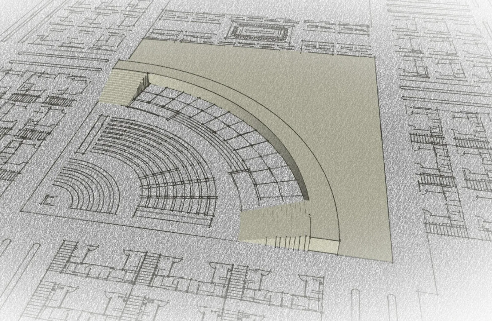
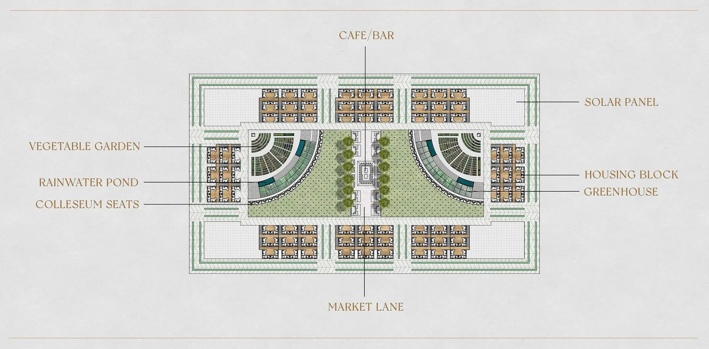
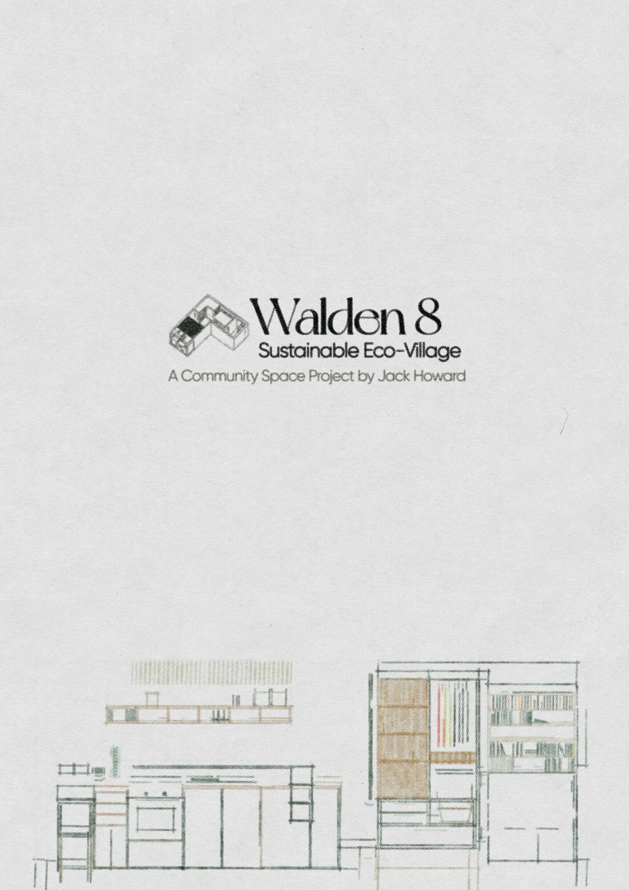
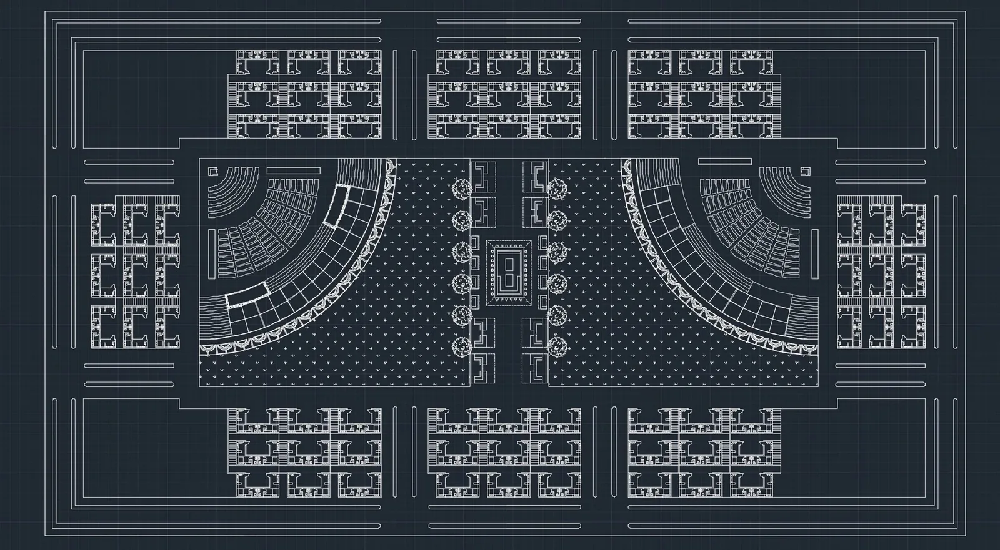
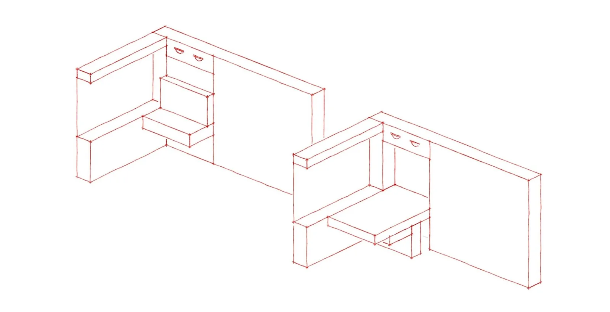
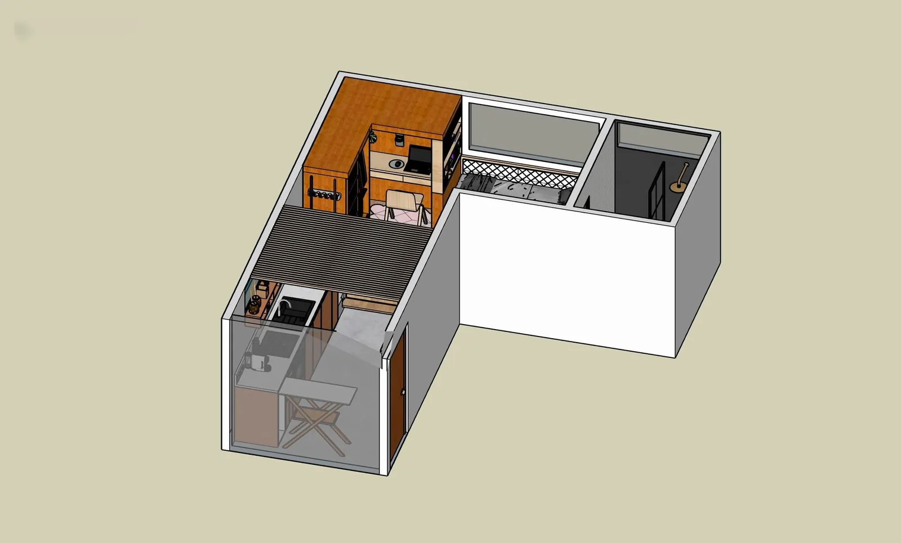
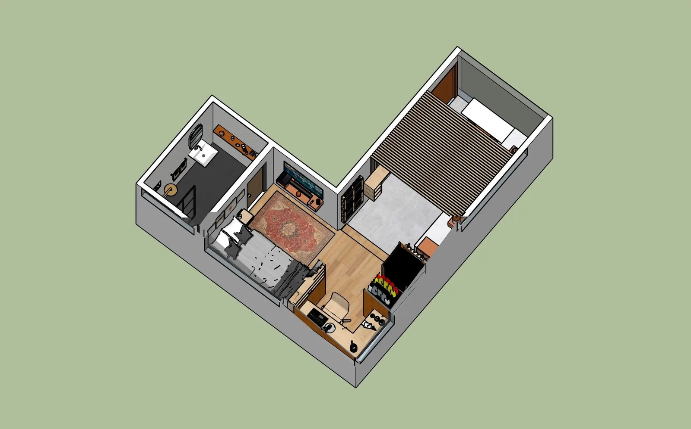
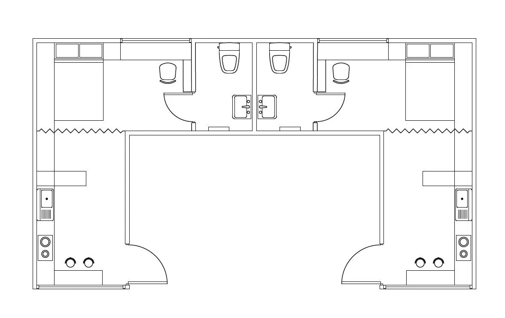
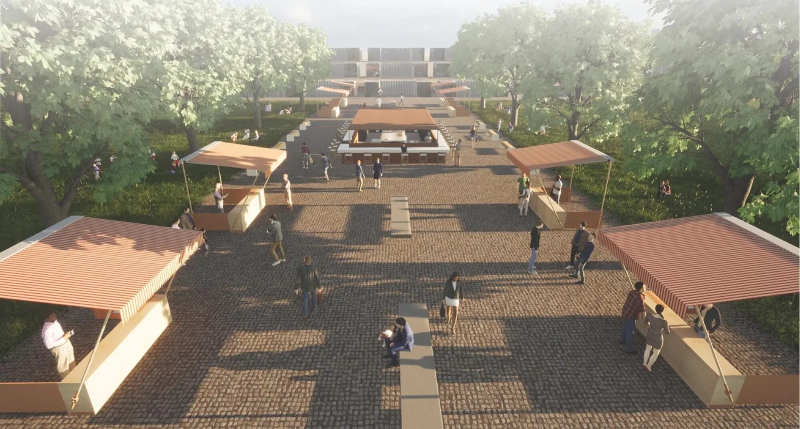

Walden 8
A shipping-container eco-village proposed for a derelict storage yard on Cork's Marina.
Concept
Walden 8 was a studio project with a brief: design a neighbourhood for Cork City Council that helps with the rent crisis, builds community, and brings a derelict site back into use. The site is a shipping-container storage yard near Cork's Marina, scruffy and underused, but close to the Marina Market, Marina Park, and the Cork Greenway.
It grew out of my own experience of Cork's rental market: months spent searching for anywhere affordable, including a single room in someone's house going for €600 a week. A trip to Inisbofin around the same time pushed the idea further. Three nights in a glamping pod with a bed, a lamp, and a drawer made from reclaimed wood, not much else, and I realised I didn't need a lot of space to be genuinely happy in it.
The design repurposes shipping containers as housing, arranged in blocks of six homes per row, staggered so no home sits directly under another and noise doesn't bleed between floors. The houses are built off-site and brought in fully assembled, so all that's needed on arrival is hooking up to gas and electric. At the centre is a shared courtyard: a colosseum-style seating bowl wrapped around greenhouses growing food through aquaponics and mushroom cultivation, a rainwater pond, vegetable gardens, and a market lane with a café and bar at its centre, where every seat faces another on purpose. Solar panels sit in the corners, and a walking and cycling path runs the full perimeter.
Each home is built from a shipping container and a half, just enough for a kitchen, bathroom and sleeping area. Details like a slide-out cutting board over a compost hatch and a fold-down dining table came out of testing the layout at full scale before settling on it. Eighteen ground-floor units are reserved for residents with mobility needs, with door widths built to access regulations from the outset. The Modern Tiny House Eco-Village study documents the individual home interiors in more detail.
- Location
- The Marina
Cork, Ireland - Year
- 2022
- Type
- Concept
- Context
- Self-set studio
project - Themes
- Housing · Community
Reuse · Food







Half the homes are available to buy and half to rent, and the ownership model is built to stop the scheme quietly turning into private rental stock: an owner can let someone else move in, but can't charge them rent for it. Food grown in the shared greenhouse and gardens gets harvested and handed to a resident garden manager, sold through the on-site market to residents and local suppliers, and the income goes back into seeds, equipment, rent subsidies and resident stipends, a closed loop rather than a one-off amenity.
The name layers a few things on top of each other: Thoreau's Walden, B.F. Skinner's utopian novel Walden Two, and Ricardo Bofill's housing block Walden 7, with “8” pitched as the next one in that line. Turned on its side, 8 is also the infinity symbol, which felt right for a village built around a closed loop rather than a straight line from resource to waste.

The first version would have got wrecked
Problem: the original concept was student container housing, modelled on the Inisbofin glamping pods. Approach: looked honestly at what similar student container housing actually looks like once it's lived in for a year. Result: dropped the student-housing idea and rebuilt the brief around long-term residents instead.
Noise bleeding between stacked homes
Problem: stacking containers directly on top of each other lets sound travel straight through the structure. Approach: staggered each row so no container sits directly under another, and used the bathrooms as a buffer between the two homes sharing a floor. Result: less noise transfer between neighbours without extra soundproofing materials.
Heat loss through a metal box
Problem: shipping containers are famous for poor thermal performance, not exactly built to be lived in. Approach: used multi-pane glazing, relying on the gas-filled gap between panes for insulation rather than the container shell itself. Result: windows that hold heat without changing the basic structure being repurposed.
Composting only works if it's actually easy
Problem: composting gets skipped if it's one extra inconvenient step. Approach: built a slide-out cutting board directly over a compost hatch in the kitchen unit, so scraps go straight in while cooking. Result: composting becomes the path of least resistance instead of an extra task.
Rows of stacked containers reading as cold and rigid
Problem: uniform blocks of stacked containers easily read as a generic, brutalist apartment building. Approach: broke the blocks up with greenery, walkways and shared green space between them instead of leaving flat facades. Result: a layout that reads as a neighbourhood rather than as stacked storage.
Affordable housing quietly turning into private rental stock
Problem: letting an owner sublet rooms freely could let them become a de facto landlord inside a scheme meant to keep costs down. Approach: built the rule into the ownership model itself, an owner can let someone else move in, but can't charge them rent. Result: keeps the housing genuinely affordable rather than letting it drift into the same market it was designed to escape.
Explore related work in art, community and place-based spatial practice.
Explore art + collaboration